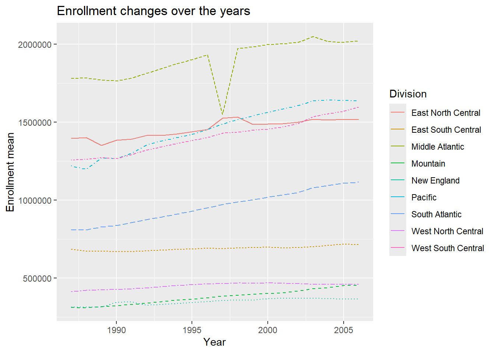

Project 1: Data combination and summarization through functions
Author
Laraib Azmat & Sam O’Ferrell
Published
June 6, 2024
Library read in
library(tidyverse)
── Attaching core tidyverse packages ──────────────────────── tidyverse 2.0.0 ──
✔ dplyr 1.1.4 ✔ readr 2.1.5
✔ forcats 1.0.0 ✔ stringr 1.5.1
✔ ggplot2 3.5.1 ✔ tibble 3.2.1
✔ lubridate 1.9.3 ✔ tidyr 1.3.1
✔ purrr 1.0.2
── Conflicts ────────────────────────────────────────── tidyverse_conflicts() ──
✖ dplyr::filter() masks stats::filter()
✖ dplyr::lag() masks stats::lag()
ℹ Use the conflicted package (<http://conflicted.r-lib.org/>) to force all conflicts to become errors
library(readr)library(readxl)
Data processing
Step 1: Read in the data
#reading in data from data folderedu_data <-read_csv("./data/EDU01a.csv")
Rows: 3198 Columns: 42
── Column specification ────────────────────────────────────────────────────────
Delimiter: ","
chr (22): Area_name, STCOU, EDU010187N1, EDU010187N2, EDU010188N1, EDU010188...
dbl (20): EDU010187F, EDU010187D, EDU010188F, EDU010188D, EDU010189F, EDU010...
ℹ Use `spec()` to retrieve the full column specification for this data.
ℹ Specify the column types or set `show_col_types = FALSE` to quiet this message.
#reading specs of table to get column namesspec(edu_data)
Step 2: Select only the Area_name (rename as area_name), STCOU and any columns that ends in “D”
#saving edits as a new objectedu_edit <- edu_data |>#selecting only area_name, STCOU, and the columns that end with "D"select(Area_name, STCOU, ends_with("D")) |>rename("area_name"="Area_name")
Step 3: Converting to a long form
#converting to a long form and moving the results to an "enrollment" columnedu_edit <- edu_edit |>pivot_longer(cols =3:12, values_to ="enrollment")#printing to see the resultsedu_edit
# A tibble: 31,980 × 4
area_name STCOU name enrollment
<chr> <chr> <chr> <dbl>
1 UNITED STATES 00000 EDU010187D 40024299
2 UNITED STATES 00000 EDU010188D 39967624
3 UNITED STATES 00000 EDU010189D 40317775
4 UNITED STATES 00000 EDU010190D 40737600
5 UNITED STATES 00000 EDU010191D 41385442
6 UNITED STATES 00000 EDU010192D 42088151
7 UNITED STATES 00000 EDU010193D 42724710
8 UNITED STATES 00000 EDU010194D 43369917
9 UNITED STATES 00000 EDU010195D 43993459
10 UNITED STATES 00000 EDU010196D 44715737
# ℹ 31,970 more rows
Step 4: Converting year to numeric data and adding a column to represent measurement
#overwriting the object to save editsedu_edit <- edu_edit |>#changing the values to reflect years using the data information sheetmutate( year =case_when( name =="EDU010187D"~1987, name =="EDU010188D"~1988, name =="EDU010189D"~1989, name =="EDU010190D"~1990, name =="EDU010191D"~1991, name =="EDU010192D"~1992, name =="EDU010193D"~1993, name =="EDU010194D"~1994, name =="EDU010195D"~1995, name =="EDU010196D"~1996 )) |>#creating a new column to represent which measurement grabbedmutate(measurement =substr(edu_edit$name, 1, 7))#printing to see the resultsedu_edit
# A tibble: 31,980 × 6
area_name STCOU name enrollment year measurement
<chr> <chr> <chr> <dbl> <dbl> <chr>
1 UNITED STATES 00000 EDU010187D 40024299 1987 EDU0101
2 UNITED STATES 00000 EDU010188D 39967624 1988 EDU0101
3 UNITED STATES 00000 EDU010189D 40317775 1989 EDU0101
4 UNITED STATES 00000 EDU010190D 40737600 1990 EDU0101
5 UNITED STATES 00000 EDU010191D 41385442 1991 EDU0101
6 UNITED STATES 00000 EDU010192D 42088151 1992 EDU0101
7 UNITED STATES 00000 EDU010193D 42724710 1993 EDU0101
8 UNITED STATES 00000 EDU010194D 43369917 1994 EDU0101
9 UNITED STATES 00000 EDU010195D 43993459 1995 EDU0101
10 UNITED STATES 00000 EDU010196D 44715737 1996 EDU0101
# ℹ 31,970 more rows
Step 5: Creating a county data set with state variable
#creating new data set with county level data edu_county <-subset(edu_edit, grepl(pattern =", \\w\\w", edu_edit$area_name))#overwriting the county object to save edits edu_county <- edu_county |>#adding a new column to represent county's statemutate(state =str_extract(edu_county$area_name, " \\w\\w")) |>#adjusting columns to look betterselect(area_name, state, STCOU, name, measurement, year, everything())#changing the class of the county data setclass(edu_county) <-c("county", class(edu_county))#printing the data setedu_county
# A tibble: 31,450 × 7
area_name state STCOU name measurement year enrollment
<chr> <chr> <chr> <chr> <chr> <dbl> <dbl>
1 Autauga, AL " AL" 01001 EDU010187D EDU0101 1987 6829
2 Autauga, AL " AL" 01001 EDU010188D EDU0101 1988 6900
3 Autauga, AL " AL" 01001 EDU010189D EDU0101 1989 6920
4 Autauga, AL " AL" 01001 EDU010190D EDU0101 1990 6847
5 Autauga, AL " AL" 01001 EDU010191D EDU0101 1991 7008
6 Autauga, AL " AL" 01001 EDU010192D EDU0101 1992 7137
7 Autauga, AL " AL" 01001 EDU010193D EDU0101 1993 7152
8 Autauga, AL " AL" 01001 EDU010194D EDU0101 1994 7381
9 Autauga, AL " AL" 01001 EDU010195D EDU0101 1995 7568
10 Autauga, AL " AL" 01001 EDU010196D EDU0101 1996 7834
# ℹ 31,440 more rows
Step 6: Creating a state data set with division variable
#creating new data set with state level dataedu_state <-subset(edu_edit, !(grepl(pattern =", \\w\\w", edu_edit$area_name)))#adjusting area_name values to easily identify the regionedu_state$area_name <-str_to_title(edu_state$area_name)#adding new column to reflect division of the stateedu_state$division <-as.character(setNames(state.division, state.name)[edu_state$area_name])#overwriting the state object to save edits edu_state <- edu_state |>#fixing division data to reflect error condition and mutate(division =case_when(str_to_title(area_name) %in%c("Connecticut", "Maine", "Massachusetts", "New Hampshire", "Rhode Island", "Vermont") ~"New England",str_to_title(area_name) %in%c("New Jersey", "New York", "Pennsylvania") ~"Middle Atlantic",str_to_title(area_name) %in%c("Illinois", "Indiana", "Michigan", "Ohio", "Wisconsin") ~"East North Central",str_to_title(area_name) %in%c("Iowa", "Kansas", "Minnesota", "Missouri", "Nebraska", "North Dakota", "South Dakota") ~"West North Central",str_to_title(area_name) %in%c("Delaware", "Florida", "Georgia", "Maryland", "North Carolina", "South Carolina", "Virginia", "District of Columbia", "West Virginia")~"South Atlantic",str_to_title(area_name) %in%c("Alabama", "Kentucky", "Mississippi", "Tennessee") ~"East South Central",str_to_title(area_name) %in%c("Arkansas", "Louisiana", "Oklahoma", "Texas") ~"West South Central",str_to_title(area_name) %in%c("Arizona", "Colorado", "Idaho", "Montana","Nevada", "New Mexico", "Utah", "Wyoming")~"Mountain",str_to_title(area_name) %in%c("Alaska", "California", "Hawaii", "Oregon", "Washington") ~"Pacific",is.na(division) ~"ERROR" )) |>#adjusting columns to look betterselect(area_name, division, STCOU, everything())#printing the data setedu_state
# A tibble: 530 × 7
area_name division STCOU name enrollment year measurement
<chr> <chr> <chr> <chr> <dbl> <dbl> <chr>
1 United States ERROR 00000 EDU010187D 40024299 1987 EDU0101
2 United States ERROR 00000 EDU010188D 39967624 1988 EDU0101
3 United States ERROR 00000 EDU010189D 40317775 1989 EDU0101
4 United States ERROR 00000 EDU010190D 40737600 1990 EDU0101
5 United States ERROR 00000 EDU010191D 41385442 1991 EDU0101
6 United States ERROR 00000 EDU010192D 42088151 1992 EDU0101
7 United States ERROR 00000 EDU010193D 42724710 1993 EDU0101
8 United States ERROR 00000 EDU010194D 43369917 1994 EDU0101
9 United States ERROR 00000 EDU010195D 43993459 1995 EDU0101
10 United States ERROR 00000 EDU010196D 44715737 1996 EDU0101
# ℹ 520 more rows
Repeating with generic functions
Reading in the second data set:
edu_data_b <-read_csv("./data/EDU01b.csv")
Rows: 3198 Columns: 42
── Column specification ────────────────────────────────────────────────────────
Delimiter: ","
chr (22): Area_name, STCOU, EDU010197N1, EDU010197N2, EDU010198N1, EDU010198...
dbl (20): EDU010197F, EDU010197D, EDU010198F, EDU010198D, EDU010199F, EDU010...
ℹ Use `spec()` to retrieve the full column specification for this data.
ℹ Specify the column types or set `show_col_types = FALSE` to quiet this message.
#reading specs of table to get column namesspec(edu_data_b)
Repeating step 1 & 2 with option to specify name of value column
steps_1_and_2 <-function(data, value ="enrollment"){# selecting the appropriate columns selected_columns <- data |>select(Area_name, STCOU, ends_with("D")) |>rename("area_name"="Area_name") # pivoting the data, 'value' is defaulted to enrollment but can be changed pivoted_data <- selected_columns |>pivot_longer(cols =3:ncol(selected_columns), values_to = value)# returning the data return(pivoted_data)}
Testing the function
# the "value = " tells r what to label the column that is being pivotedafter_step_2 <-steps_1_and_2(data = edu_data_b, value ="enrollment")after_step_2
# A tibble: 31,980 × 4
area_name STCOU name enrollment
<chr> <chr> <chr> <dbl>
1 UNITED STATES 00000 EDU010197D 44534459
2 UNITED STATES 00000 EDU010198D 46245814
3 UNITED STATES 00000 EDU010199D 46368903
4 UNITED STATES 00000 EDU010200D 46818690
5 UNITED STATES 00000 EDU010201D 47127066
6 UNITED STATES 00000 EDU010202D 47606570
7 UNITED STATES 00000 EDU015203D 48506317
8 UNITED STATES 00000 EDU015204D 48693287
9 UNITED STATES 00000 EDU015205D 48978555
10 UNITED STATES 00000 EDU015206D 49140702
# ℹ 31,970 more rows
Writing function for step 3:
step_3 <-function(data){edit <- data |>#first we have to create a column corresponding to the last 2 digitsmutate(last_2_digits =substr(name,8,9),#then we will use logic to say if these are bigger than 24 the year must be in the 1900syear =ifelse(last_2_digits >24, paste("19",last_2_digits, sep =""), paste("20",last_2_digits, sep ="")),measurement =substr(data$name, 1, 7)) |>select(-last_2_digits)return(edit)}
# A tibble: 31,980 × 6
area_name STCOU name enrollment year measurement
<chr> <chr> <chr> <dbl> <chr> <chr>
1 UNITED STATES 00000 EDU010197D 44534459 1997 EDU0101
2 UNITED STATES 00000 EDU010198D 46245814 1998 EDU0101
3 UNITED STATES 00000 EDU010199D 46368903 1999 EDU0101
4 UNITED STATES 00000 EDU010200D 46818690 2000 EDU0102
5 UNITED STATES 00000 EDU010201D 47127066 2001 EDU0102
6 UNITED STATES 00000 EDU010202D 47606570 2002 EDU0102
7 UNITED STATES 00000 EDU015203D 48506317 2003 EDU0152
8 UNITED STATES 00000 EDU015204D 48693287 2004 EDU0152
9 UNITED STATES 00000 EDU015205D 48978555 2005 EDU0152
10 UNITED STATES 00000 EDU015206D 49140702 2006 EDU0152
# ℹ 31,970 more rows
Writing function for step 5:
#after already having the county datastep_5 <-function(data){ with_state <- data |>mutate(state =substr(area_name, nchar(area_name) -1,nchar(area_name))) |>#adjusting columns to look betterselect(area_name, state, STCOU, everything()) return(with_state)}
Testing step 5:
#subsetting to work after step 4county_practice <-subset(after_step_3, grepl(pattern =", \\w\\w", after_step_3$area_name))practice <-step_5(county_practice)practice #works
# A tibble: 31,450 × 7
area_name state STCOU name enrollment year measurement
<chr> <chr> <chr> <chr> <dbl> <chr> <chr>
1 Autauga, AL AL 01001 EDU010197D 8099 1997 EDU0101
2 Autauga, AL AL 01001 EDU010198D 8211 1998 EDU0101
3 Autauga, AL AL 01001 EDU010199D 8489 1999 EDU0101
4 Autauga, AL AL 01001 EDU010200D 8912 2000 EDU0102
5 Autauga, AL AL 01001 EDU010201D 8626 2001 EDU0102
6 Autauga, AL AL 01001 EDU010202D 8762 2002 EDU0102
7 Autauga, AL AL 01001 EDU015203D 9105 2003 EDU0152
8 Autauga, AL AL 01001 EDU015204D 9200 2004 EDU0152
9 Autauga, AL AL 01001 EDU015205D 9559 2005 EDU0152
10 Autauga, AL AL 01001 EDU015206D 9652 2006 EDU0152
# ℹ 31,440 more rows
Step 6 function (division):
step_6_division <-function(data){ title_case_data <- data |># first we mutate to str_to_title and render that:mutate(area_name =str_to_title(area_name))# fixing division data to reflect error condition division_data <- title_case_data |>mutate(division =case_when( area_name %in%c("Connecticut", "Maine", "Massachusetts", "New Hampshire", "Rhode Island", "Vermont") ~"New England", area_name %in%c("New Jersey", "New York", "Pennsylvania") ~"Middle Atlantic", area_name %in%c("Illinois", "Indiana", "Michigan", "Ohio", "Wisconsin") ~"East North Central", area_name %in%c("Iowa", "Kansas", "Minnesota", "Missouri", "Nebraska", "North Dakota", "South Dakota") ~"West North Central", area_name %in%c("Delaware", "Florida", "Georgia", "Maryland", "North Carolina", "South Carolina", "Virginia", "District of Columbia", "West Virginia")~"South Atlantic", area_name %in%c("Alabama", "Kentucky", "Mississippi", "Tennessee") ~"East South Central", area_name %in%c("Arkansas", "Louisiana", "Oklahoma", "Texas") ~"West South Central", area_name %in%c("Arizona", "Colorado", "Idaho", "Montana", "Nevada", "New Mexico", "Utah", "Wyoming")~"Mountain", area_name %in%c("Alaska", "California", "Hawaii", "Oregon", "Washington") ~"Pacific",TRUE~"ERROR")) |>#adjusting columns to look betterselect(area_name, division, STCOU, everything())return(division_data)}
Testing function step 6:
state <-subset(after_step_3, !(grepl(pattern =", \\w\\w", after_step_3$area_name)))practice_step_6 <-step_6_division(state)practice_step_6
# A tibble: 530 × 7
area_name division STCOU name enrollment year measurement
<chr> <chr> <chr> <chr> <dbl> <chr> <chr>
1 United States ERROR 00000 EDU010197D 44534459 1997 EDU0101
2 United States ERROR 00000 EDU010198D 46245814 1998 EDU0101
3 United States ERROR 00000 EDU010199D 46368903 1999 EDU0101
4 United States ERROR 00000 EDU010200D 46818690 2000 EDU0102
5 United States ERROR 00000 EDU010201D 47127066 2001 EDU0102
6 United States ERROR 00000 EDU010202D 47606570 2002 EDU0102
7 United States ERROR 00000 EDU015203D 48506317 2003 EDU0152
8 United States ERROR 00000 EDU015204D 48693287 2004 EDU0152
9 United States ERROR 00000 EDU015205D 48978555 2005 EDU0152
10 United States ERROR 00000 EDU015206D 49140702 2006 EDU0152
# ℹ 520 more rows
Step 4 function:
step_4_5_6 <-function(data){#first we need to take the data and split it into #two different data sets (county and state) county <-subset(data, grepl(pattern =", \\w\\w", data$area_name)) state <-subset(data, !(grepl(pattern =", \\w\\w", data$area_name)))# now we apply both functions county_edit <-step_5(county) state_edit <-step_6_division(state)# return both data setsreturn(list("County_Data"= county_edit, "State_Data"= state_edit))}
# A tibble: 6 × 7
area_name state STCOU name enrollment year measurement
<chr> <chr> <chr> <chr> <dbl> <chr> <chr>
1 Autauga, AL AL 01001 EDU010197D 8099 1997 EDU0101
2 Autauga, AL AL 01001 EDU010198D 8211 1998 EDU0101
3 Autauga, AL AL 01001 EDU010199D 8489 1999 EDU0101
4 Autauga, AL AL 01001 EDU010200D 8912 2000 EDU0102
5 Autauga, AL AL 01001 EDU010201D 8626 2001 EDU0102
6 Autauga, AL AL 01001 EDU010202D 8762 2002 EDU0102
head(final_data_practice$State_Data)
# A tibble: 6 × 7
area_name division STCOU name enrollment year measurement
<chr> <chr> <chr> <chr> <dbl> <chr> <chr>
1 United States ERROR 00000 EDU010197D 44534459 1997 EDU0101
2 United States ERROR 00000 EDU010198D 46245814 1998 EDU0101
3 United States ERROR 00000 EDU010199D 46368903 1999 EDU0101
4 United States ERROR 00000 EDU010200D 46818690 2000 EDU0102
5 United States ERROR 00000 EDU010201D 47127066 2001 EDU0102
6 United States ERROR 00000 EDU010202D 47606570 2002 EDU0102
Writing wrapper function
my_wrapper <-function(url, default_var_name ="enrollment"){# first we read in the csv result <-read_csv(url) |># then we apply steps 1 and 2steps_1_and_2(value = default_var_name)|># now we apply step 3step_3() |># finally steps 4,5,6 which returns a list of state and county datastep_4_5_6()return(result)}
Testing wrapper function
# to use this function you provide a url and the default variable namedata_b_test <-my_wrapper(url ="./data/EDU01b.csv", default_var_name ="testing" )
Rows: 3198 Columns: 42
── Column specification ────────────────────────────────────────────────────────
Delimiter: ","
chr (22): Area_name, STCOU, EDU010197N1, EDU010197N2, EDU010198N1, EDU010198...
dbl (20): EDU010197F, EDU010197D, EDU010198F, EDU010198D, EDU010199F, EDU010...
ℹ Use `spec()` to retrieve the full column specification for this data.
ℹ Specify the column types or set `show_col_types = FALSE` to quiet this message.
data_b_test # lets gooooooo
$County_Data
# A tibble: 31,450 × 7
area_name state STCOU name testing year measurement
<chr> <chr> <chr> <chr> <dbl> <chr> <chr>
1 Autauga, AL AL 01001 EDU010197D 8099 1997 EDU0101
2 Autauga, AL AL 01001 EDU010198D 8211 1998 EDU0101
3 Autauga, AL AL 01001 EDU010199D 8489 1999 EDU0101
4 Autauga, AL AL 01001 EDU010200D 8912 2000 EDU0102
5 Autauga, AL AL 01001 EDU010201D 8626 2001 EDU0102
6 Autauga, AL AL 01001 EDU010202D 8762 2002 EDU0102
7 Autauga, AL AL 01001 EDU015203D 9105 2003 EDU0152
8 Autauga, AL AL 01001 EDU015204D 9200 2004 EDU0152
9 Autauga, AL AL 01001 EDU015205D 9559 2005 EDU0152
10 Autauga, AL AL 01001 EDU015206D 9652 2006 EDU0152
# ℹ 31,440 more rows
$State_Data
# A tibble: 530 × 7
area_name division STCOU name testing year measurement
<chr> <chr> <chr> <chr> <dbl> <chr> <chr>
1 United States ERROR 00000 EDU010197D 44534459 1997 EDU0101
2 United States ERROR 00000 EDU010198D 46245814 1998 EDU0101
3 United States ERROR 00000 EDU010199D 46368903 1999 EDU0101
4 United States ERROR 00000 EDU010200D 46818690 2000 EDU0102
5 United States ERROR 00000 EDU010201D 47127066 2001 EDU0102
6 United States ERROR 00000 EDU010202D 47606570 2002 EDU0102
7 United States ERROR 00000 EDU015203D 48506317 2003 EDU0152
8 United States ERROR 00000 EDU015204D 48693287 2004 EDU0152
9 United States ERROR 00000 EDU015205D 48978555 2005 EDU0152
10 United States ERROR 00000 EDU015206D 49140702 2006 EDU0152
# ℹ 520 more rows
Applying the function to both data sets, resulting in two lists
Rows: 3198 Columns: 42
── Column specification ────────────────────────────────────────────────────────
Delimiter: ","
chr (22): Area_name, STCOU, EDU010187N1, EDU010187N2, EDU010188N1, EDU010188...
dbl (20): EDU010187F, EDU010187D, EDU010188F, EDU010188D, EDU010189F, EDU010...
ℹ Use `spec()` to retrieve the full column specification for this data.
ℹ Specify the column types or set `show_col_types = FALSE` to quiet this message.
Rows: 3198 Columns: 42
── Column specification ────────────────────────────────────────────────────────
Delimiter: ","
chr (22): Area_name, STCOU, EDU010197N1, EDU010197N2, EDU010198N1, EDU010198...
dbl (20): EDU010197F, EDU010197D, EDU010198F, EDU010198D, EDU010199F, EDU010...
ℹ Use `spec()` to retrieve the full column specification for this data.
ℹ Specify the column types or set `show_col_types = FALSE` to quiet this message.
Creating a function that combines the data sets
combine <-function(data1, data2){# combine county data county_combined <-bind_rows(data1$County_Data, data2$County_Data)# combine state data state_combined <-bind_rows(data1$State_Data, data2$State_Data)# return list of combined datareturn(list("Combined_County_Data"= county_combined, "Combined_State_Data"= state_combined))}
$Combined_County_Data
# A tibble: 62,900 × 7
area_name state STCOU name enrollment year measurement
<chr> <chr> <chr> <chr> <dbl> <chr> <chr>
1 Autauga, AL AL 01001 EDU010187D 6829 1987 EDU0101
2 Autauga, AL AL 01001 EDU010188D 6900 1988 EDU0101
3 Autauga, AL AL 01001 EDU010189D 6920 1989 EDU0101
4 Autauga, AL AL 01001 EDU010190D 6847 1990 EDU0101
5 Autauga, AL AL 01001 EDU010191D 7008 1991 EDU0101
6 Autauga, AL AL 01001 EDU010192D 7137 1992 EDU0101
7 Autauga, AL AL 01001 EDU010193D 7152 1993 EDU0101
8 Autauga, AL AL 01001 EDU010194D 7381 1994 EDU0101
9 Autauga, AL AL 01001 EDU010195D 7568 1995 EDU0101
10 Autauga, AL AL 01001 EDU010196D 7834 1996 EDU0101
# ℹ 62,890 more rows
$Combined_State_Data
# A tibble: 1,060 × 7
area_name division STCOU name enrollment year measurement
<chr> <chr> <chr> <chr> <dbl> <chr> <chr>
1 United States ERROR 00000 EDU010187D 40024299 1987 EDU0101
2 United States ERROR 00000 EDU010188D 39967624 1988 EDU0101
3 United States ERROR 00000 EDU010189D 40317775 1989 EDU0101
4 United States ERROR 00000 EDU010190D 40737600 1990 EDU0101
5 United States ERROR 00000 EDU010191D 41385442 1991 EDU0101
6 United States ERROR 00000 EDU010192D 42088151 1992 EDU0101
7 United States ERROR 00000 EDU010193D 42724710 1993 EDU0101
8 United States ERROR 00000 EDU010194D 43369917 1994 EDU0101
9 United States ERROR 00000 EDU010195D 43993459 1995 EDU0101
10 United States ERROR 00000 EDU010196D 44715737 1996 EDU0101
# ℹ 1,050 more rows
Writing generic functions for plotting the summary
Plotting state data with enrollment mean and divison on y-axis and year on x-axis
#writing a function to plot based on state divisions plot.state <-function(data, var_name ="default_val_name"){#creating a temporary object to store edits data_summary <- data |>mutate(year =as.numeric(year)) |>#filtering out error values in divisionfilter(division !="ERROR", !is.na(var_name)) |>#grouing by division and year group_by(division, year) |>#summarizing the enrollment meanssummarise(enroll_mean =mean(get(var_name))) #plotting the data as a line graph data_summary |>ggplot(data_summary |>aes(x = year, y = enroll_mean, colour = division)) +geom_line(aes(linetype = division)) +guides(linetype ="none") +labs(x ="Year", y ="Enrollment mean", title ="Enrollment changes over the years", colour ="Division")}#testing the function plot.state(data = edu_state, var_name ="enrollment")
`summarise()` has grouped output by 'division'. You can override using the
`.groups` argument.
`summarise()` has grouped output by 'division'. You can override using the
`.groups` argument.

County plot function with:
data from the state specified or the default
only the Area_names from the previous part
plot.county <-function(data, state_name ="AL", interest ="top", x ="5", var_name ="default_var_name"){# first create data set that has areas we are interested inif (interest =="top"){ summary <- data |>filter(state == state_name) |>group_by(area_name) |>summarise(enroll_mean =mean(get(var_name))) |>arrange(desc(enroll_mean)) |>slice(1:x) |>select(area_name) }elseif(interest =="bottom"){ summary <- data |>filter(state == state_name) |>group_by(area_name) |>summarise(enroll_mean =mean(get(var_name))) |>arrange(enroll_mean) |>slice(1:x) |>select(area_name) }# now combine this with original data set to plot values: new <-semi_join(data, summary, by ="area_name")ggplot(new |>mutate(year =as.numeric(year)), aes(x = year, y =get(var_name), colour = area_name)) +theme(legend.position="bottom") +geom_line(aes(linetype = area_name)) +guides(linetype ="none") +labs(x ="Year", y ="Enrollment mean", title ="Enrollment changes over the years", colour ="County")}
Testing the county plot function
plot.county(state ="NC", data = final_combined_data$Combined_County_Data, var_name ="enrollment", interest ="bottom", x =20)